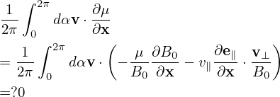
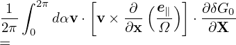
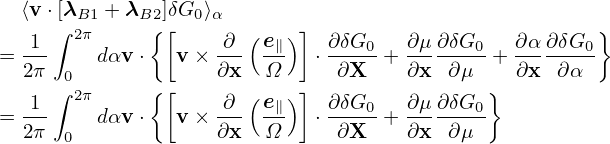

From the definition of μ, we obtain
| (425) |
Using
| (426) |
expression (425) is written as
| (427) |
which agrees with Eq. (10) in Frieman-Chen’s paper[3].


Using the fact that δG0 is independent of α, the left-hand side of Eq. (122) is written as
